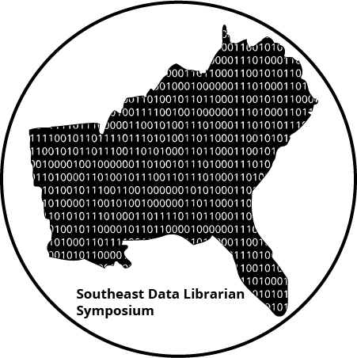

---

layout: default
title:  Registration - Southeast Data Librarian Symposium

---
    		<div class="blurb">
			<h1>Registration</h1>
<p> </P>
<P style="margin-top: 20px;"></P>
<P>Registration for the <strong>Southeast Data Librarian Symposium on October 8-9, 2018</strong> is now open.</P>
<div align="center"><a href="https://www.eventbrite.com/e/2018-southeast-data-librarian-symposium-registration-47966524165" target="_blank">
	</a></div>
 <p>The symposium is intended to provide a low-cost opportunity for librarians and other 
 research data specialists to gather and explore developments in the field of data librarianship, 
 including the management and sharing of research data. In addition to 
 learning about new work in the field, attendees will have the opportunity to network and build 
 partnerships with regional colleagues.</P>
 

 
 	</div><!-- /.blurb -->
